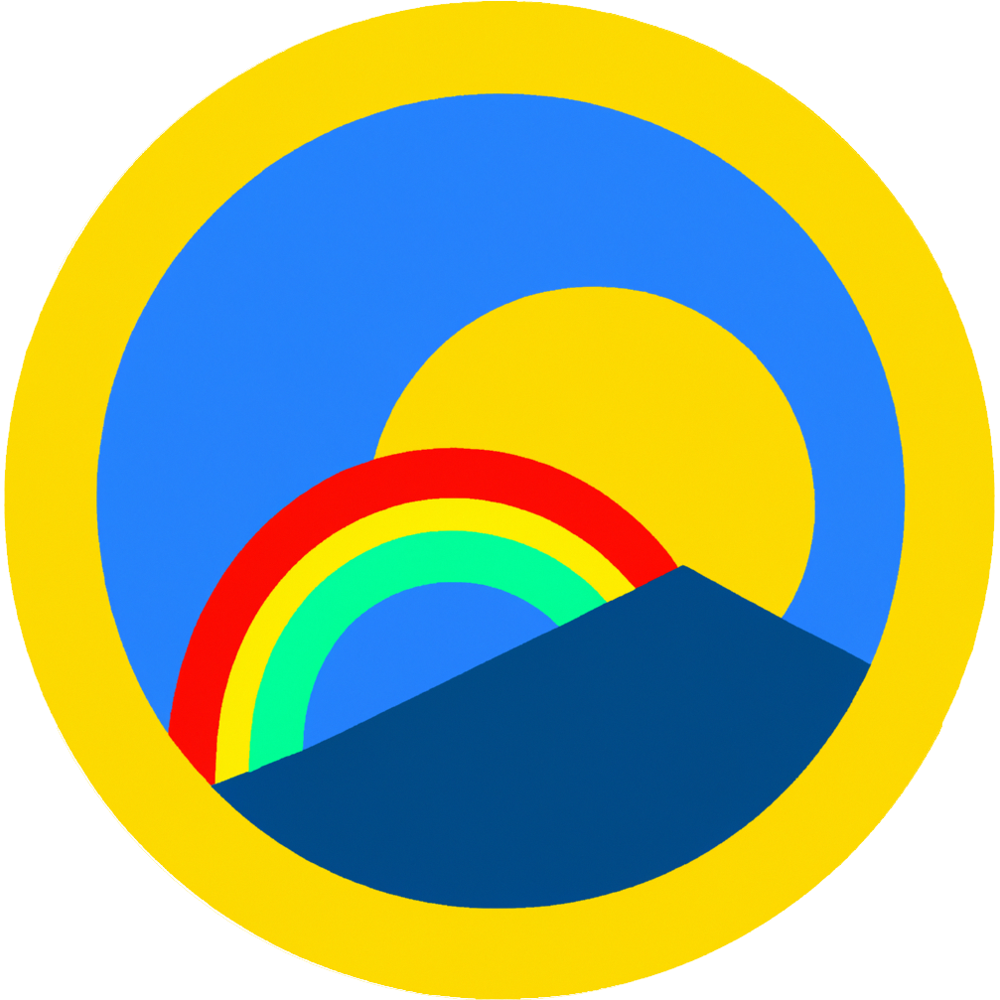

New Perspectives
New Perspectives is a Deck of Strategies for Exploring the World Around You.
It was written in collaboration with GPT-3, a large language model. Language models are few-shot learners, which refers to their ability to pick up a task with a few examples. While 'task' usually refers a common natural language processing challenge, what it really means is that it can continue anything that you've started. Here, I gave it a personal list of strategies to break out of routine, and it suggested more tips in line with mine - some of which were adopted, adapted, and used for more suggestions.
The favicon is a lightly-edited generation from DALL-E 2, because why not?
